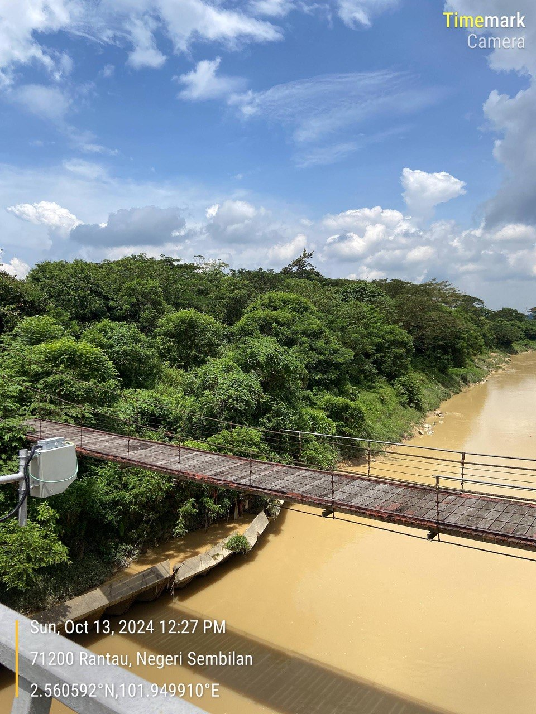
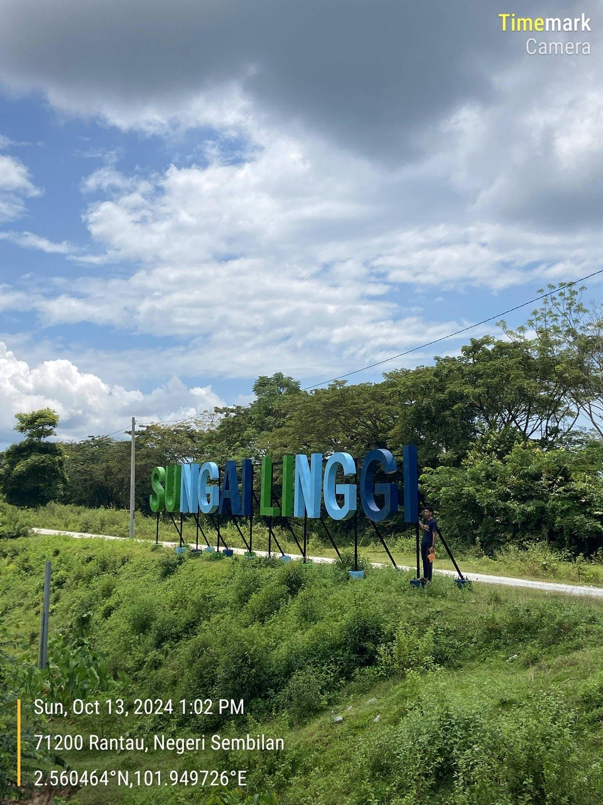
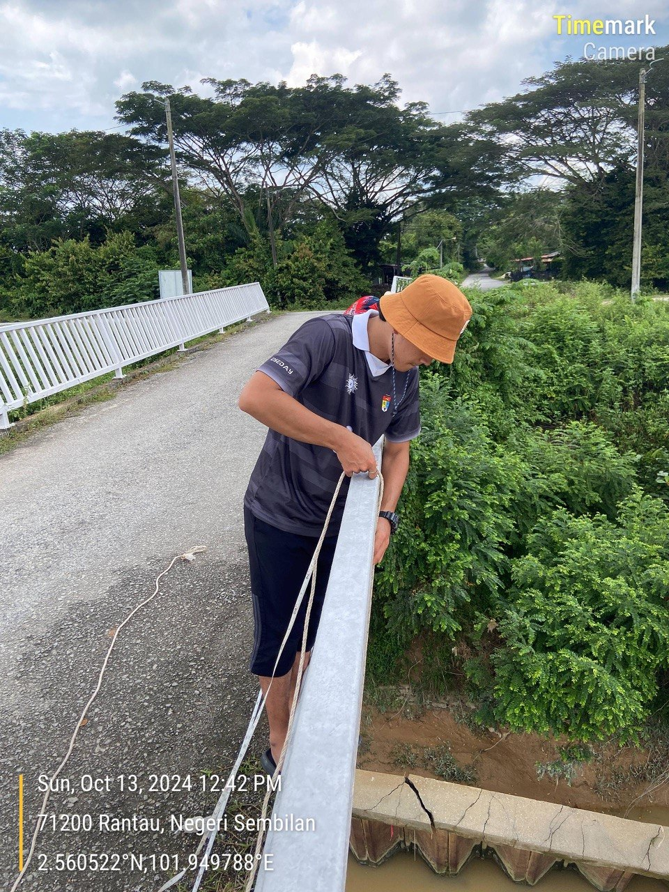
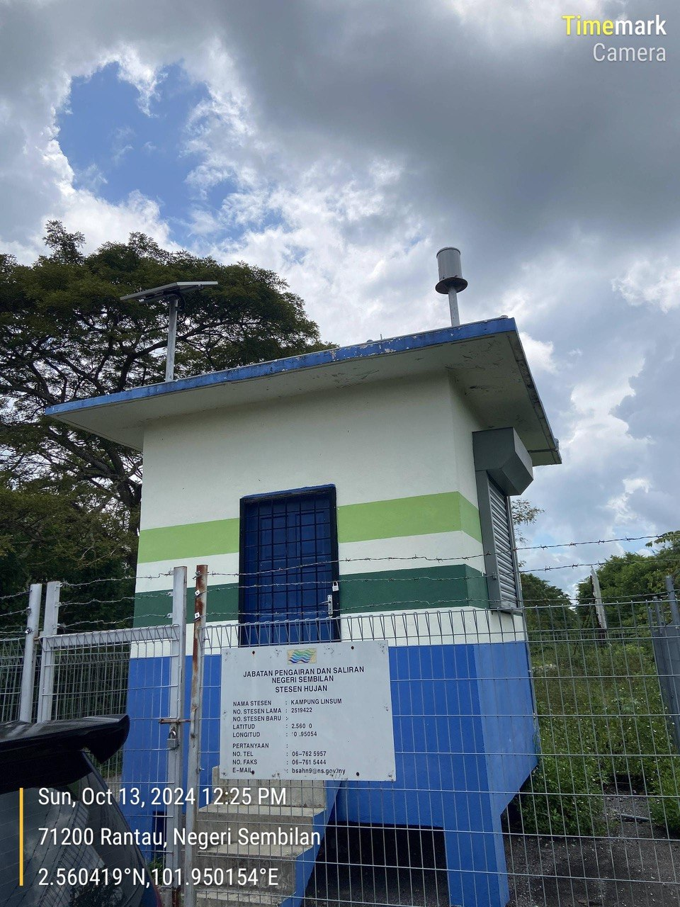
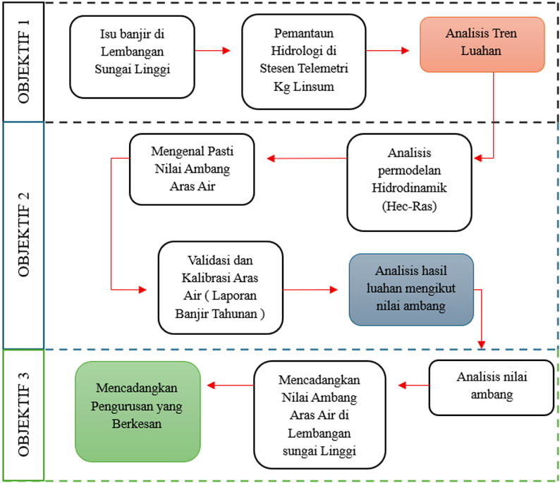

River Analysis
River Analysis Field Activity
Selected field documentation from river monitoring and flood modeling work.






River Analysis Workflow
Overall process flow used for the Linggi River flood modeling and spatial analysis study.

Project: Flood Modeling Study in Determining Water Level Threshold Values: A Case Study of the Linggi River, Negeri Sembilan
Project Background
Floods frequently impact communities and infrastructure along the Linggi River. Existing water level threshold values are outdated, reducing the effectiveness of flood warning systems. This study aims to reassess and update threshold values to improve flood risk management and disaster preparedness in the basin.
Study Area
The project focuses on the Linggi River Basin in Negeri Sembilan, covering upstream, midstream, and downstream segments. The basin includes urban settlements, agricultural lands, and critical infrastructure, all vulnerable to flooding.
Objectives
- Reassess and determine accurate water level threshold values for the Linggi River.
- Generate updated flood hazard maps for planning and mitigation purposes.
- Identify high-risk flood zones to guide emergency response and resource management.
Methodology
- Collect hydrological and spatial data, including river cross-sections, rainfall, and land use.
- Conduct field surveys and in-situ water measurements to validate hydraulic parameters.
- Apply hydraulic modeling to simulate flood scenarios under current conditions.
- Use GIS analysis to integrate data and produce detailed flood maps.
Software Used
- QGIS - spatial analysis and mapping
- ArcMap & ArcGIS Pro - GIS processing and visualization
- HEC-RAS - hydraulic and flood modeling
- Microsoft Excel - data management and analysis
Outputs
- Updated water level threshold values for flood warning and monitoring.
- High-resolution flood extent maps showing potential inundation for different return periods.
- Identification of vulnerable zones to prioritize flood mitigation and planning efforts.
Final Conclusions
- Previous threshold values were insufficient, underestimating flood risk in certain areas.
- Updated modeling provides more accurate and reliable flood hazard assessment.
- The project enhances flood preparedness, risk management, and spatial planning for the Linggi River Basin, supporting local authorities and communities in mitigating flood impacts effectively.